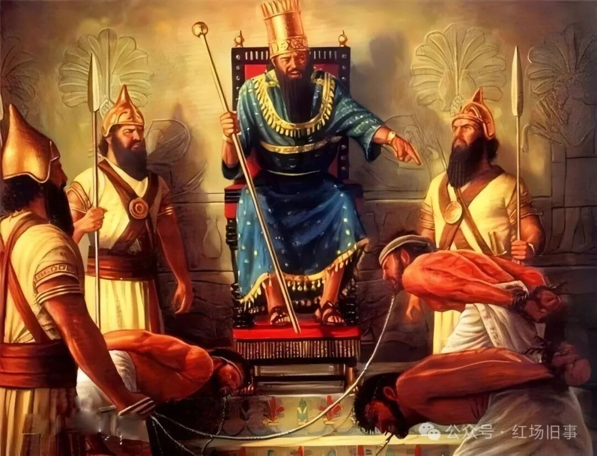
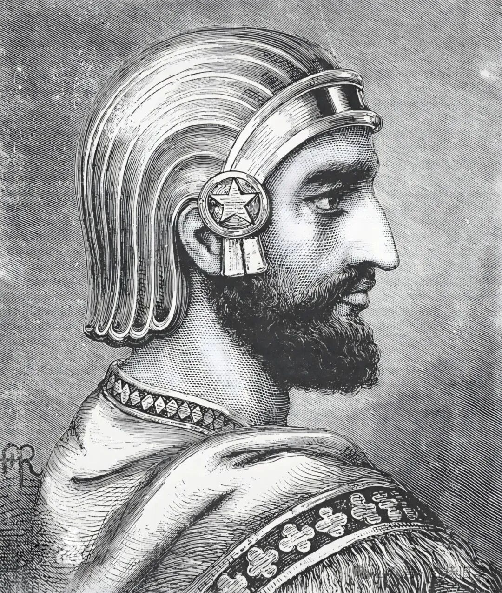
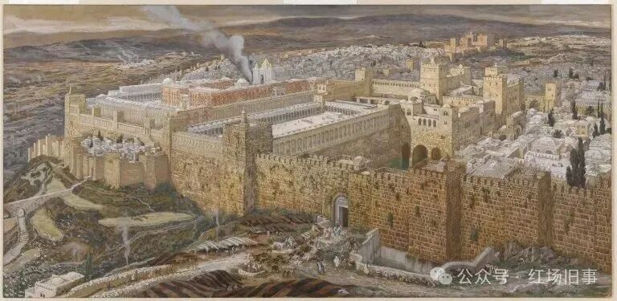
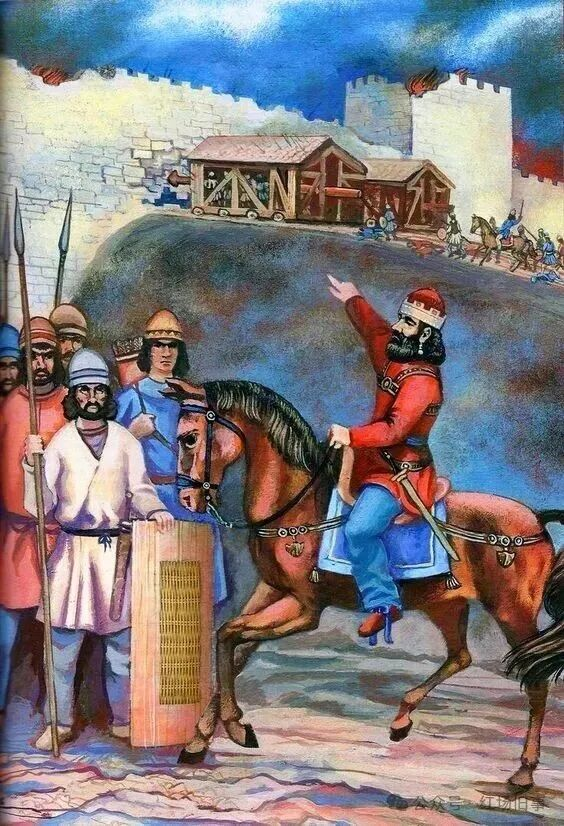

公元前538年，一道来自波斯的诏令，改写了犹太民族的命运。当新巴比伦国王尼布甲尼撒二世摧毁耶路撒冷、焚毁所罗门圣殿、将数万犹太人掳往巴比伦时，没人想到，解放者会来自东方的伊朗高原。两千五百年后，当以色列战机呼啸着掠过德黑兰上空，当伊朗最高领袖在空袭中遇难，人们不禁要问：被遗忘的千年渊源，那个曾经解放犹太人的波斯帝国，两方是如何演变成今天不死不休的局面？

一、居鲁士的诏令：一段被犹太人铭记的“救赎”
在犹太民族的历史记忆中，有一个名字始终闪耀着特殊的光芒——居鲁士。公元前586年，新巴比伦王国攻陷耶路撒冷，犹太王国灭亡。圣殿被焚毁，王室成员、祭司、工匠等数万犹太人被掳往巴比伦，史称“巴比伦之囚”。这是犹太民族历史上最惨痛的灾难之一，仅次于后来罗马人摧毁第二圣殿。然而命运的转折在半个世纪后悄然到来。公元前550年，居鲁士大帝缔造了波斯历史上第一个统一王朝——阿契美尼德王朝，即赫赫有名的波斯帝国。在攻打新巴比伦王国时，居鲁士得到了当地犹太人的支持和策应。公元前538年，他攻陷巴比伦，随即发布了一道改变历史的诏令：释放“巴比伦之囚”，并将巴比伦人掠夺来的5000多件圣殿物品归还给犹太人。

此后，大约4万名犹太人得以陆续返回巴勒斯坦，在波斯人的帮助下重建耶路撒冷圣殿。正是由于居鲁士的这一敕令对犹太民族的发展具有重大意义，犹太人经常将其与20世纪初英国支持犹太人在巴勒斯坦建国的《贝尔福宣言》相提并论。悬疑点来了：一个异族统治者，为何要对被征服的民族施以如此恩惠？是纯粹的仁慈，还是另有算计？
二、宽容背后的“隐秘议程”
表面上看，波斯帝国对犹太人实行了相当宽容的政策。政治上，回归巴勒斯坦的犹太人获得了较高程度的自治。公元前445年改革后，犹地亚（犹太地区）争取到了独立自治行省的地位，直接受波斯帝国中央统辖，发行自己的货币，经济呈现繁荣景象。宗教上，居鲁士不仅允许犹太人重建圣殿，还对其宗教活动给予充分尊重。此后在波斯帝国漫长的统治时期，犹太人享受着在异族统治下难得的平和生活。但历史学家告诉我们，真相远比表面复杂。波斯人的宽容，从来不是无条件的慈善。在波斯帝国看来，犹太地区是其西部边疆的战略要地。公元前405年埃及摆脱波斯统治后，犹太地区成为对抗埃及的前沿。波斯人在这里修筑城堡、派驻军队，所有军费都转嫁给当地犹太人，许多百姓被迫变卖家产甚至子女，以缴纳苛捐杂税。更有甚者，公元前458年，犹太大祭司以斯拉试图重建耶路撒冷城墙时，其政敌向波斯国王进谗言，称“这城若再重建，城墙完毕，犹太人将不再上供”。听信谗言的国王阿塔薛西斯立即禁止任何修建城墙的举动，直至8年后才在“和以前一样纳贡”的承诺下解禁。

那么问题来了：如果波斯人真的视犹太人为“兄弟”，为何要阻止他们修筑城墙？如果这是一场平等的友谊，为何所有“恩惠”都暗含着“忠诚换生存”的交易？
三、千年变局：从“恩人”到“敌人”的漫长转身
波斯帝国的宽容持续了两个世纪，直到公元前330年被亚历山大大帝所灭。此后，波斯人和犹太人都沦为外族的臣民，两族关系进入漫长的“时断时续、时紧时松”阶段。值得玩味的是，当帕提亚帝国（公元前247年—公元224年）时期犹太人反抗罗马时，作为宗主国的帕提亚不仅没有施以援手，反而主动提议派4万骑兵加入罗马统帅的阵营——这4万骑兵很可能被用来镇压犹太人的叛乱。公元224年萨珊王朝建立后，波斯人起初对犹太人再次敞开宽容的胸怀，但当利益相悖时，翻脸比翻书还快。公元614年波斯入侵耶路撒冷时，曾得到当地犹太人的大力支持。然而当波斯国王发现拉拢基督徒对维持统治更有利后，立刻下令将犹太人逐出耶路撒冷，“但凡不服敕令者将格杀勿论”。

历史的吊诡在于：两千多年前，波斯人是犹太人的“解放者”；公元7世纪阿拉伯人征服波斯后，犹太人沦为伊斯兰帝国的二等公民；20世纪上半叶，伊朗境内的犹太人仍时遭迫害；而到了20世纪中叶，两个古老民族竟然再次握手——这一次，他们成了对抗阿拉伯世界的“隐形盟友”。
四、1948：当“千年之缘”遇上现代地缘
1948年以色列建国后，伊朗成为继土耳其之后第二个承认以色列的穆斯林国家。这一决定在当时引发轩然大波，但巴列维国王毫不在意。为什么？因为地缘政治的逻辑压倒了宗教和历史的情绪。对以色列而言，建国之初面临阿拉伯世界的重重包围，需要通过联合中东地区的非阿拉伯国家来减轻压力——这就是开国元勋本-古里安提出的“边缘政策”。对伊朗而言，北方面临苏联的南下威胁，周边是敌对的阿拉伯民族主义势力，与以色列合作可以获得美国的好感和技术支持。
于是，一场跨越2500年的“再续前缘”悄然展开。以色列成为伊朗最大的石油客户。从1959到1971年，以色列获得的80%至90%原油供应来自伊朗。以色列帮助伊朗训练令人闻风丧胆的秘密警察机构“萨瓦克”（SAVAK），提供军事技术，分享情报。两国还合资成立“跨亚石油公司”，共建通往地中海的输油管道。20世纪70年代，随着伊朗石油财富激增，两国合作达到顶峰——联合研发导弹项目，军事、经济、情报领域全面合作。谁能想到，这些在德黑兰秘密工作的以色列专家，他们的后代会在一百年后成为空袭德黑兰的飞行员？
五、最后的悬念：2500年的情谊，为何毁于一旦？
1979年2月1日，霍梅尼乘坐飞机抵达德黑兰，不到两周，巴列维王朝覆灭。

新政权将以色列称为“小撒旦”，关闭以色列驻德黑兰大使馆并将其移交给巴勒斯坦解放组织，切断一切外交联系。那些曾与以色列并肩作战的伊朗军官，有的被处决，有的流亡海外。跨越2500年的“波犹情谊”，在几个月内灰飞烟灭。是什么让这段古老的关系如此脆弱？是宗教革命的狂热，还是大国博弈的暗流？当年支持居鲁士解放犹太人的神意，为何在霍梅尼口中变成了“必须消灭以色列”的神谕？也许答案就藏在历史的深处：无论是波斯帝国还是现代伊朗，对犹太人的态度从来不是单纯的情感问题，而是地缘利益的算计。当利益一致时，宽容与合作随之而来；当利益相悖时，翻脸与敌视不可避免。那么1979年的革命，究竟是伊朗内部自发的剧变，还是美苏博弈的产物？以色列在巴列维王朝覆灭的过程中，究竟扮演了什么角色？为什么美国情报部门对这场革命毫无预警？欢迎在评论区分享你的看法。六、下集预告一个犹太国家，如何在一个以什叶派为国教的王国开设大使馆？两国的情报机构（摩萨德和萨瓦克）是如何开始“共享机密”的？
下期《中东风云｜从“兄弟”到“死敌”：1979年之前，伊朗和以色列有多铁？》，敬请期待。
打不起 怂不住：坐拥世界级资源的伊朗，为何活成了“中东穷人”？
文字与图片版权归各自权利人所有；排版根据抓取内容整理。